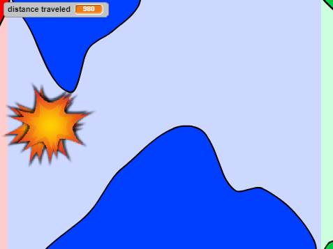

Quest Game
Created using a tutorial from CSFIRST with Scratch, I made a quest-based RPG game where you must search for and discover a cursed pile of gold in order to save the people of a nearby village.

Cave Surfer Game
Created using a tutorial from CSFIRST with Scratch, I made a cave surfing game where you play as a bat and must traverse through several cave stages to reach a finish line.